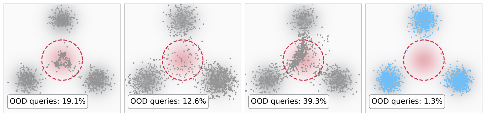
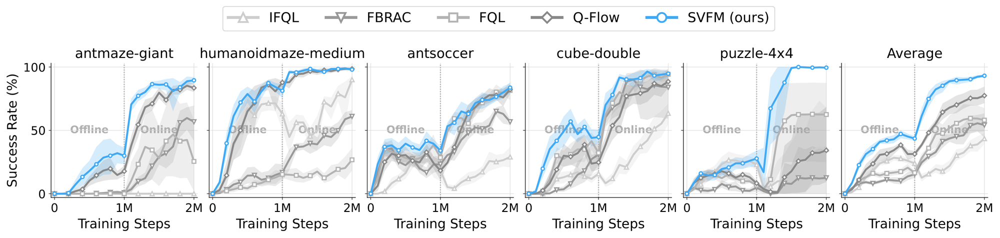
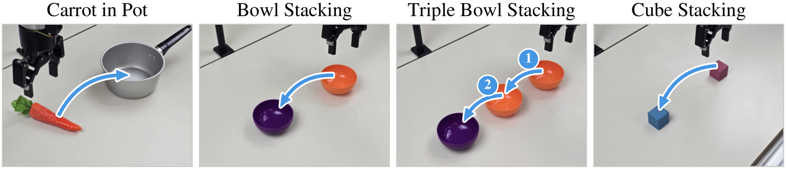
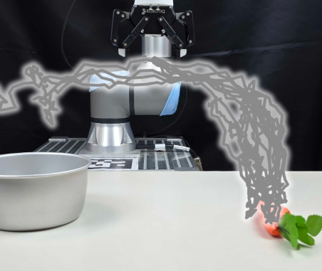
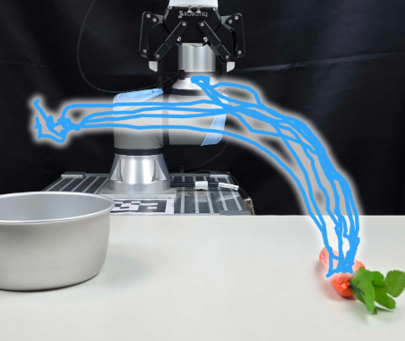
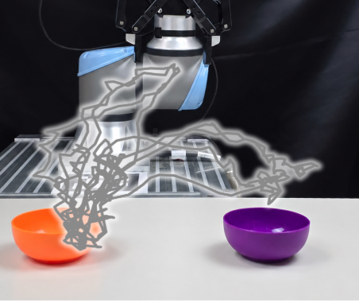
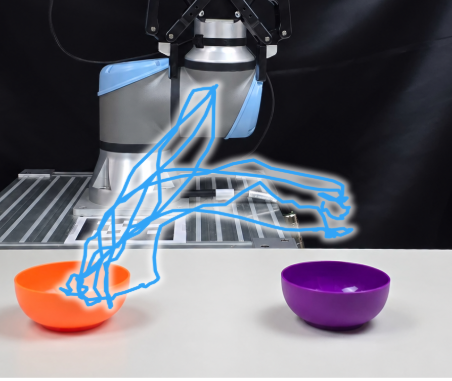

Soft-Value Flow Matching
for Offline Reinforcement Learning
1KAIST 2Hanyang University 3Korea University
*Equal contribution †Corresponding authors
Paper (PDF) arXiv Code BibTeX
TL;DR SVFM improves a multi-step flow policy with a learned critic, without backpropagating through sampling. It evaluates the critic at endpoints of a fixed behavior process, not the current actor, and supervises the actor with the gradient of the resulting soft value.

57%OGBench, standardnext best 53% (Q-Flow)
86%LIBERO with π0.5next best 82% (Filtered BC)
99%Real robot with GR00T N1.7BC+ 73%
Abstract
Flow-matching policies represent multimodal actions, but improving them with a learned critic in offline reinforcement learning faces two difficulties: backpropagating through multi-step sampling is costly and unstable, and critic queries on actor-generated actions can expose the policy to out-of-distribution value errors. We introduce Soft-Value Flow Matching (SVFM), which trains a multi-step actor with the gradient of a conditional soft value for KL-regularized policy improvement. Starting from noised data actions, SVFM samples stochastic continuations of a fixed behavior process and evaluates the critic at their endpoints, keeping the queries used for guidance independent of the current actor. A log-mean-exp of these values provides a Monte Carlo target for a soft-value network, whose gradient guides actor updates without trajectory backpropagation. We further propose an adaptive temperature that scales with the spread of critic values across continuations. SVFM achieves higher average success rates than the compared baselines on OGBench, LIBERO, and LIBERO-Plus. It also improves real-world manipulation with both task-specific flow policies and a pretrained VLA model.
Where the critic is queried matters
Flow and diffusion policies generate actions through many integration steps, so improving them with a critic usually means either backpropagating through the whole sampling trajectory, keeping the actor fixed and adding test-time computation, or distilling into a one-step policy. Recent methods avoid trajectory backpropagation by building guidance from the actor's own samples.
That choice has a cost in offline RL. A critic learned from a fixed dataset can over-estimate actions the data never covers. When guidance comes from actor samples, every actor update also moves where the critic is evaluated, possibly toward those over-estimated actions. In the toy task above, queries on actor samples drift into the over-estimated region; queries from fixed behavior continuations stay near the data.
Method
The Doob h-transform says the optimal correction to a behavior process, for KL-regularized policy improvement, is the gradient of a conditional soft value: a log-mean-exp of critic values over the behavior process's possible endpoints. SVFM learns that function directly from behavior continuations and regresses the actor onto the guided velocity.
-
Behavior continuations
At a data-path anchor x_t=(1-t)x_0+ta, re-integrate the learned behavior field u_\phi as a stochastic process with K independent Brownian paths to get terminal actions \{a^{(j)}\}_{j=1}^K. A parameter \kappa\in(0,1] scales the noise, so continuations stay anchor-specific instead of collapsing to a common mean shift at small t.
-
Soft-value regression
Score the endpoints with the critic and fit a soft-value network to their log-mean-exp:
-
Guided flow matching
Regress the actor velocity onto the data velocity plus the scaled soft-value gradient. No trajectory backpropagation is needed:
-
Adaptive temperature
With a constant \lambda, how strongly the soft value favors high-value continuations changes as the critic's scale changes. SVFM sets the temperature from the spread of critic values across continuations, s_Q=\mathbb E_{x_t}[\mathrm{std}_j\,Q(s,a^{(j)})], with a dimensionless gain g:
The resulting guidance is invariant to positive affine rescaling of Q.
Offline RL on OGBench
Ten OGBench domains (five tasks each) under two protocols: the standard setting of FQL (8 seeds) and the advanced setting of QAM (12 seeds), which adds action chunking for manipulation, a 10-critic ensemble, and pessimistic value learning. Bars show the average success rate over all domains.
Per-domain results, standard setting
Per-domain results, advanced setting
Offline-to-online fine-tuning
Each method trains offline for 1M gradient updates, then fine-tunes for 1M online environment steps (8 seeds). SVFM keeps improving with online interaction and reaches the highest final average, with the largest gain on puzzle-4x4.

Adaptive vs. constant temperature
Under the standard setting (default tasks, 3 seeds), adaptive temperature averages 56%, above the best single constant temperature (45%) and the best constant chosen per domain in hindsight (51%). It ranks first on 6 of 10 domains.
Fine-tuning a VLA: LIBERO and LIBERO-Plus
We fine-tune π0.5 from a behavior-cloned policy trained on 5 demonstrations per task. SVFM's critic sees the demonstrations and 2,000 policy rollouts, failures included. Best-of-N and QGF use a critic trained on the same data for the same number of updates. LIBERO is evaluated with 50 episodes per task, LIBERO-Plus on 10,030 perturbed tasks.
The largest gain over BC is on LIBERO-Long (52% → 71%). On LIBERO-Plus, SVFM is best or tied for best under every perturbation type.
Per-suite and per-perturbation results
Real-world manipulation
Four tasks, 50 teleoperated demonstrations each, 20 trials per method and task.

Task-specific flow policies
ResNet-18 encoders with an MLP flow-matching actor. SVFM reaches 64% on average and matches or exceeds every baseline on every task; on cube stacking, Flow BC fails all 20 trials while SVFM succeeds in half.
Pretrained VLA: GR00T N1.7
Fine-tuned jointly on all four tasks. SVFM trains for 10K updates from a GR00T policy behavior-cloned for 10K updates; BC+ instead behavior-clones for 20K updates, matching SVFM's total actor updates.
Smoother, more direct motion
Among successful trials, Flow BC shows irregular back-and-forth motion, while SVFM follows smoother, more consistent paths through grasp and release. Four successful trials per method from the same initial placement:
Carrot in pot


Bowl stacking


Citation
@misc{lee2026svfm,
title = {Soft-Value Flow Matching for Offline Reinforcement Learning},
author = {Lee, Dohyun and Hong, Junhyeong and Choi, Theo and Kim, Kinam and
Choo, Jaegul and Lee, Kyungjae and Oh, Yoonseon},
year = {2026},
note = {Preprint}
}